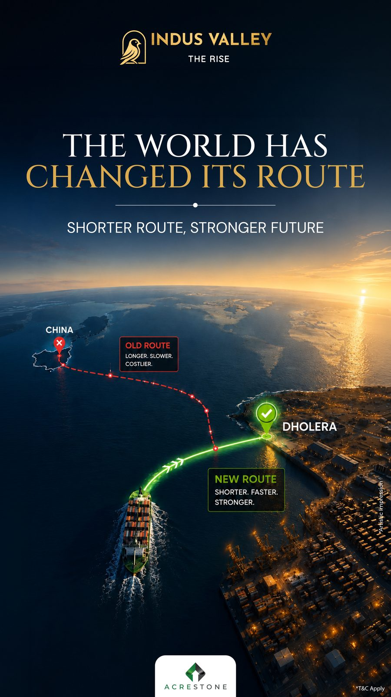
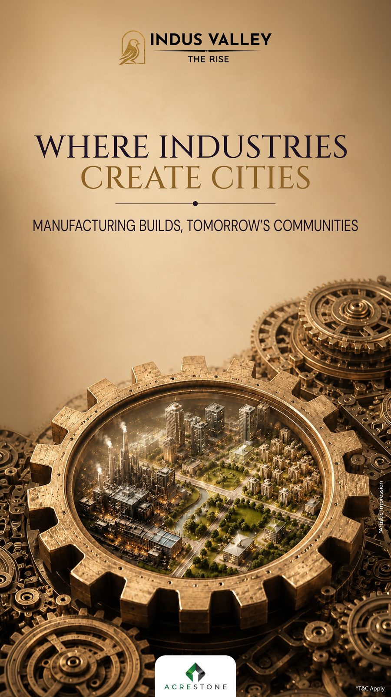
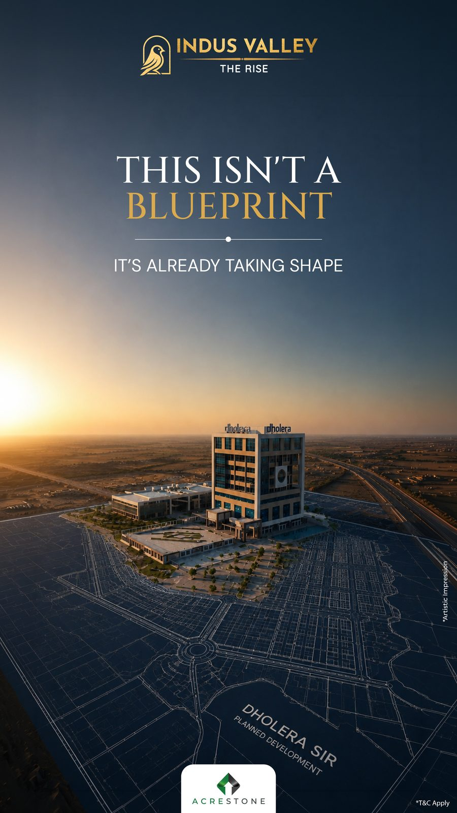

Case Study 02
Case Study 02
Client — Indus Valley (Acrestone) · Role — Graphic Designer · 2024
Build a complete digital presence for an emerging investment hub — from global technology ecosystem EDMs to seasonal festival campaigns, all grounded in a nature-meets-modernity visual language.
Warm golden-hour photography anchored every piece, with data-driven infographics for investor EDMs and lifestyle photography for social. The two streams shared colour and type but served different audiences.

Investor EDMs needed data credibility (maps, route visualizations, tech ecosystem graphics) while lifestyle content needed aspiration. A shared warm palette and type system unified both.
Global technology and shipping route visualizations turned complex investment narratives into scannable, shareable EDM content — the globe/map motif became a recurring visual anchor.
Seasonal content (Onam, Diwali) wasn't filler — it was designed to keep the brand visible between major campaign pushes, maintaining the golden-hour warmth across occasions.



Five tiles from a 303-asset engagement spanning investor EDMs, festival campaigns, social media, and grid covers for Acrestone's Indus Valley project.
303
Assets delivered
5
Sub-campaigns across the engagement
2
Audience streams (investor + lifestyle)
3
Months, continuous delivery
Next case study
Kreeva →